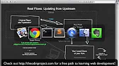
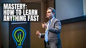
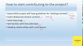

Contributing to Open Source Part 1!: The Easy Way
action
T
The Odin Project
How do you contribute to open source? In this video, I'll describe the easiest way to make a simple contribution to an open source project -- without using the command line, a text editor, "forking a repo", or even touching Git outside of Github. I'll also describe what kinds of contributions open source software projects are typically looking for. As an example, I use submitting a student solution to a web development exercise from The Odin Project, a free online curriculum for learning web development with Ruby on Rails. You can find more information about that project at http://theodinproject.com.
18 comments
sort by
C
Add a comment ...
ButtonMash 6 years ago
Wow this video was super helpful, clear, and concise. Thank you very much.
REPLY
1newbie 4 years ago (edited)
A remark to what happening at 04:12 is: after clicking "Propose file change", it now goes to commit page instead of the pull request screen as shown on the video. One need to click the commit name (e.g. patch-1 if it is the first commit of your branch) near the top of the screen to go to the pull request
REPLY
.jpg)
Christine Fredricksen 2 years ago (edited)
Thanks so much ! This video was really helpful and to the point.
REPLY
.jpg)
andrewscheuermann05 8 years ago
FYI: the edit button has changed to a diagonal pencil.
REPLY
.jpg)
Sampath Lokuge 6 years ago
Nice.Thanks a lot :)
REPLY
ads video
14:25

Contributing to Open Source Part II: The Real Way
38k views . 8 years ago
18:25
contributing to Open Source for the first time
201 views . 2 years ago
8:49
.webp)
How (in 2022) to become a software engineer with no experience
341k views . 1 year ago
36:57
Git and Github - 0 Experience to Professional in 1 Tutorial (Part 1)
34k views . 1 year ago
1:00;06

Python for Beginners- Learn Python in 1 Hour
7.3M views . 2 years ago
19:10
Mastery: How to Learn Anything Fast | Nishant Kasibhatia
11M views . 3 years ago
17:50
THE POWER OF DISCOVERING YOUR GIFT FOR SUCCESS [THIS WILL CHANGE YOUR LIFE INSTANTLY]
1.2M views . 3 years ago
15:24
How to become a Math Genius: How do genius people see a math problem! by mathOgenius
2.3M views .5 years ago
1:00:45

2022 ONE DROP REGGAE RIDDIMS MIBX/ DJ FRANCOL, TARRUS RILEY,J BOOG,
CHRIS MARTIN,BUSY SIGNAL,ALAINE Etc
646k views . 3 months ago
13:41
How to start contributing to an open source project?
6.7k views . 5 years ago